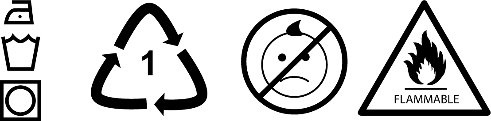

Chapter 3. The API as a Product
If you build a great experience, customers tell each other about that. Word of mouth is really powerful.
Jeff Bezos, founder and CEO of Amazon
The phrase “API-as-a-Product” (AaaP) is something we hear often when talking to companies who have built and maintained sucessful API programs. It’s a play on the
In this chapter, we’ll explore the AaaP approach and how you can use it to better design, deploy, and manage your APIs. As you may have gathered from Chapter 2, the AaaP approach involves understanding which decisions are critical for the success of your APIs and where within your organization those decisions should be made. It can help you think about what work needs to be centralized and what you can successfully decentralize, where enforcement and incentives are best applied, and how you can measure the impact of these decisions in order to quickly adapt your products (your APIs) when needed.
There are lots of decisions to make when creating new products for your customers. That is true whether you are creating a portable music player, a laptop computer, or a message queuing API. In all three cases, you need to know your audience, understand and solve their most pressing problems, and pay attention to customers when they give you feedback on how you can improve your product. These three things can be encapsulated in three lessons we will focus on in this chapter:
Design thinking in order to make sure you know your audience and understand their problems
Customer onboarding as a way to quickly show customers how they can succeed with your product
Developer experience for managing the post-release lifecycle of your product and to gain insights for future modifications.
Along the way we’ll learn from companies like Apple about the power of design thinking and customer onboarding. We will also see how Jeff Bezos helped the Amazon Web Services (AWS) division create an implementation mandate that establishes a clear, predictable developer experience. Most companies we talk to understand the notion of AaaP, but not all of them are able to turn this understanding into tangible action. However, the organizations that have a good track record for designing and releasing successful API products all have figured out how to meet the three big challenges we’ve just mentioned—the first of which has to do with how your teams think about the API products they are creating.
Design Thinking One of the things that Apple is known for in product design circles is its ability to engage in design thinking. For example, when describing the work that went into Apple’s Mac OS X, one of the key software architects, Cordell Ratzlaff, said: “We focused on what we thought people would need and want, and how they would interact with their computer.” And this focus played out in real and tangible ways. “There were three evaluations required at the inception of a product idea: a marketing requirement document, an engineering requirement document, and a user-experience document,” explained onetime Apple vice president (and one of the people credited with founding the field of human–computer interaction design) Donald Norman.
This attention to meeting people’s needs definitely resulted in creating viable business for Apple. A continuing string of products over multiple decades contributed to Apple’s reputation for defining new trends in technology and helped it capture the greater market share more than once.
Tim Brown, CEO of the California-based design and consulting firm, IDEO, defines the term “design thinking” as:
A design discipline that uses the designer’s sensibility and methods to match people’s needs with what is technologically feasible and what a viable business strategy can convert into customer value and market opportunity.
There is a lot to unpack in that definition. For our purposes we’ll focus on the ideas of “matching people’s needs” and a “viable business strategy.”
Matching People’s Needs One of the key reasons to build an API at all is to “match people’s needs”—to solve a problem. Discovering problems to solve and deciding which problems have priority is just part of the challenge of the AaaP approach—that is the what of APIs. An even more fundamental element is knowing the who. Who are the people you are serving with this API? Correctly identifying the audience and their problem can go a long way toward ensuring you build the right product: one that works well and is used often by your target audience.
Harvard Business School’s Clayton Christensen calls this work of understanding the needs of your audience the theory of Jobs to Be Done. He says, “People don’t simply buy products or services, they ‘hire’ them to make progress in specific circumstances.” People (your customers) want to make progress (solve problems), and they will use (or hire) whatever products or services they find will help them do that.
SHOULD YOU APPLY AAAP TO BOTH INTERNAL AND EXTERNAL APIS? Yes. Maybe not with the same level of investement of time and resources—we will cover that the next section—but this is one of the lessons Jeff Bezos taught us in “The Bezos Mandate” that led Amazon to open the initially internal AWS platform for use as a revenue-generating external API. Because Amazon adopted AaaP from the start, not only was it possible (e.g., safe) to start to offer the same internal API to external users, but it was also profitable.
In most companies, the IT department is in the business of helping others (customers) solve problems. Most of the time, these customers are fellow employees within the same company (private internal developers). Sometimes the customers are important business partners or even anonymous public developers of third-party applications (external developers). Each of these developer audiences (private, partner, and public) has its own set of problems to solve and its own way of thinking about (and resolving) those problems. Design thinking encourages teams to get to know their audience before starting the process of creating APIs as a solution. We’ll explore this topic in “Knowing Your Audience”.
Viable Business Strategy Another important part of design thinking is determining a viable business strategy for your API product. It doesn’t make sense to invest a lot of time and money in an API product that has little to no return value. Even when you do a good job of designing the right product for the right audience, you need to make sure you spend an appropriate amount of time and money and that you have a clear idea of what the payback will be when the API is up and running.
For most companies, there is only a finite amount of time, money, and energy that can be devoted to creating APIs to solve problems. That means deciding which problems get solved is of critical importance. Sometimes we encounter companies where the APIs that were built don’t solve important business problems. Instead, they solve known problems in the IT department: things like exposing database tables or automating internal department processes. These are usually important problems to solve, but they might not be solutions that have a big impact on the day-to-day business operations or “move the needle” when it comes to meeting the company’s annual sales or product goals.
Figuring out which problems matter for the business can be tricky. It might be difficult for leadership to communicate company goals in ways that the IT department can easily understand. And even when the IT team has a grasp of what problems could make a difference to the company, the department may not have good measures and metrics to confirm their assumptions and track their progress. For these reasons, it is important to have a standardized way to communicate key business objectives and relevant performance indicators. We’ll talk more about this aspect of assessing your API’s success in “Measurements and Milestones”.
The Bezos Mandate No matter how old or new your company is, launching a successful API program—one that will transform your company—is not a simple task. One of the most well-respected companies who worked through this process (and which continues to transform itself more than a decade later) is Amazon, with its AWS platform. First created in the early 2000s, the platform is widely regarded as a brilliant master-stroke executed cleanly by a savvy team of IT and business executives. Although the AWS platform has become a huge success, it was born out of an internal need: a deep frustration with the amount of time needed for Amazon’s IT programs to act upon and deliver the business team’s requests. The AWS team was too slow to act, and what they eventually created was less than adequate at both the technical (scaling) and business (product quality) level.
As current AWS CEO Andy Jassy tells it, the AWS team (along with Amazon CEO Jeff Bezos and others) spent time identifying just what it was they were good at and what it would take to design and build out a core set of shared services on an interoperative platform. Their plan took more than three years to develop, but in the end formed the basis for Amazon’s ability to offer its now famous Infrastructure-as-a-Service (IaaS) platform. This now $17bn business only happened because of careful attention to detail and relentless iterations to improve upon the original idea. Much the same way as Apple has transformed the way consumers thought of handheld devices, AWS has tranformed the way that businesses think of servers and other infrastructure.
One of the important ways in which AWS was able to change the point of view internally was through what is now known as the Bezos Mandate. Steve Yegge, former senior manager of software development at Amazon, describes the mandate in his “Google Platforms Rant” from 2005. One of the key points in the blog post is that Bezos issued a mandate that all teams must expose their functionality through APIs and that the only way to consume other teams’ functionality must be through APIs. In other words, APIs are the only way to get things done. He also required that all APIs be designed and built as if they would be exposed outside the company boundaries. This idea that “APIs must be externalizable” was another key constraint that affected the way the APIs were designed, built, and managed.
So, design thinking is about matching the needs of your audience and committing to supporting viable business strategies when deciding which APIs are worthy of your limited resources and attention. What does that look like in real terms? How can you apply these product lessons to your API management efforts in order to express the API-as-a-Product approach?
Applying Design Thinking to APIs You can elevate your APIs from utilities to products by applying the principles of design thinking to your design and creation process. Several companies we’ve talked to in the last few years are doing just that. They have made the decision that their APIs, even the APIs that are just used within the organization, deserve the same level of care, study, and design sense as any product or service that company already provides. For many companies, this means teaching their API developers and others in the IT department the principles of design thinking directly. For others, it means creating a “bridge” between the product design teams and the API teams within the same organization. In a few organizations we’ve worked with, we’ve seen both activities at the same time: teaching design thinking to the developers and strengthening the bridge between the product teams and the developer teams.
The actual content of a design-thinking curriculum is out of scope for this book. However, most design-thinking courses provide a mix of topics like the ones we’ve already mentioned in this chapter, such as:
Design thinking skills
Understanding the customer
Service/workflow design
Prototyping and testing
Business considerations
Measurement and assessment
If your company already has staff dedicated to product design, they can be a great resource for teaching your developer teams how to start thinking and acting like product designers. Even if your company doesn’t have dedicated design staff, you can usually find product design classes on offer at a local college or university. Many of these institutions will offer to customize a course for delivery on site. Finally, even if you’re a small company or just a single individual interested in the topic, you’ll be able to find online courses in design thinking.
One company we talked to (a large consumer bank) decided to create its own internal design thinking course, with the product design staff delivering the sessions to API teams at various company locations. These trainers then became important resources that the API teams could call upon when they needed advice on how to improve their API designs. The goal was not to turn all their developers and software architects into skilled designers. What they were aiming to do was simply improve the API teams’ understanding of the design process and teach them how to apply these skills to their own work.
It is important to remember that the results of design thinking are more than just improved usability or aesthetic appeal of your APIs. It can result in better understanding of the target audience (customers), a focus on creating APIs that meet viable business strategies, and a more reliable process for measuring the relative success of the APIs your team releases into the ecosystem.
As important as design is in the overall AaaP approach, it is just the start. It is also important to pay attention to the initial customer experience once the API is released and available for use. And that’s what we’ll cover in the next section.
Customer Onboarding Anyone who’s purchased anything from Apple in recent years knows how unboxing their products can be a memorable experience. And that is not by coincidence. For years, Apple has had a dedicated team whose only job is to focus on delivering the best “unpacking experience.”
According to Adam Lashinsky, author of the book Inside Apple (Business Plus), “For months, a packaging designer was holed up in this room performing the most mundane of tasks—opening boxes.” He continues, “Apple always wants to use the box that elicits the perfect emotional response on opening…One after another, the designer created and tested an endless series of arrows, colors, and tapes for a tiny tab designed to show the consumer where to pull back the invisible, full-bleed sticker adhered to the top of the clear iPod box. Getting it just right was this particular designer’s obsession.”
And this attention to detail went well beyond just opening the box and taking out the device. Apple made sure the battery was fully charged, that customers could be “up and running” within seconds, and that the overall experience was pleasant and seamless. Apple’s product teams wanted customers to love their product from the very start: as Stefan Thomke and Barbara Feinberg wrote in “Design Thinking and Innovation at Apple,” “Helping people ‘love’ their equipment and the experience of using it animated—and continues to motivate—how Apple products were and are designed today.”
WHEN THE API IS YOUR ONLY PRODUCT Stripe is a successful payment service delivered via a great API that developers really love. The startup’s recent valuation was about $10 bn with less than 700 employees. The founders’ entire business strategy was to deliver their payment services via APIs. For this reason, they decided to invest in design thinking and the API-as-a-Product approach from the very beginning. For Stripe, the API was their only product. Treating their API as a product helped them meet both their technical and business goals.
This same attention to the initial experience of product customers applies to APIs. Making it possible for developers to love them may seem a far-fetched notion, but it has long-reaching implications. If your API is difficult to understand in the beginning, developers will struggle with it, and if it takes “too long” to get started, they will just walk away in frustration. In the API world, the time it takes to “get things working” is often referred to as TTFHW, or “Time to first Hello, World.” In the online application space this is sometimes called “Time to Wow!” (TTW).
Time to Wow! In his article “Growth Hacking: Creating a Wow Moment,” David Skok, part of the equity investment firm Matrix Partners, describes the importance of a customer’s “Wow!” moment as a key hurdle to cross in any customer relationship: “Wow! is the moment…where your buyer suddenly sees the benefit they get from using your product, and says to themselves ‘Wow! This is great!’” And while Skok is talking directly to people designing and selling apps and online services to consumers, the same principles apply to people designing and deploying APIs.
A key element to the TTW approach is understanding not just the problem to solve (see “Design Thinking”) but also the time and work required to get to Wow! The effort it takes to reach a point where the API consumer understands how to use the API and learns that it will solve their important problems is the hurdle each and every API must cross in order to win over the consumer. Skok’s approach is to map out the steps needed to experience the Wow! moment and work to reduce friction and effort along the way.
For example, consider the process of using an API that returns a list of hot leads for your company’s key product, WidgetA. A typical process flow might look like this:
Send a login request to get an access_token.
Retrieve the access_token and store it.
Compose and send a request for the product_list using the access_token.
From the returned list, find the item where name="WidgetA" and get that record’s sales_lead_url.
Use that sales_lead_url to send a request for all the sales leads where status="hot" (using the access_token).
You now have a list of hot sales leads for the WidgetA product.
That’s a lot of steps, but we’ve seen workflows with many more than this. And each step along the way is an opportunity for the API consumer to make a mistake (e.g., send a malformed request) and for the API provider to return an error (e.g., a timeout for a data request). There are three possible request/response failures here (login, product_list, and sales_leads). The TTW will be limited to how long it takes a brand new developer to figure the API out and get it working. The longer it takes, the less likely they are to ever get their “Wow!” moment, and to keep using the API.
There are a number of ways to improve the TTW for this example. First, we could adjust the design by offering a direct call to get the list of hot leads (e.g., GET /hot-leads-by-product-name?name=WidgetA). We might also spend time writing “scenario” documentation that shows new users exactly how to solve this particular problem. We could even offer a sandbox environment for testing examples like this one that allows users to skip the authentication work while they learn the API.
API PILLARS Design, documentation, and testing are what we call API pillars. Those and others are covered in detail in Chapter 4.
Anything you can do to reduce the time it takes to get to “Wow!” will improve the API consumer’s opinion of your API and increase the chances that the API will be used by more developers both inside and outside your organization.
Onboarding for Your APIs Just as Apple spends time on its “unboxing” experience, companies that are good at adopting the AaaP approach spend time making sure the “onboarding” experience for their APIs is as smooth and rewarding as possible. And just as Apple makes sure the battery is already charged up when you open your new mobile phone, media player, tablet, etc., APIs can be “fully charged” at first use, making it easy for developers to get started and make an impact within minutes of trying out a new API.
Early in our work on APIs and API management we used to tell our customers they needed to get a brand new user from the initial view of their API’s landing page to a live working example in about 30 minutes. Anything more than that risked losing a potential user and wasting all the time and money put into designing and deploying the API. However, after one of us completed a presentation on API onboarding, a representative of Twilio, the SMS API company, came up to us and told us they aim for an initial onboarding experience of 15 minutes or less.
Twilio’s field (SMS APIs) is notoriously fiddly and confusing. Imagine trying to design a single API that works with dozens of different SMS gateways and companies and is easy to use and understand. Not an easy task. One of the keys to achieving their 15-minute onboarding goal is the copious use of measurements and metrics in their tutorials to identify bottlenecks—points where API users “drop out”—and determine just how long it takes for them to complete the tasks. “We are obsessed about metrics, we constantly monitor growth at different [stages] of the customer adoption funnel and collect NPS associated to the different activities we run,” said Elisa Bellagamba when she was in charge of adoption for Twilio’s voice products.
TWILIO’S NEO MOMENT In 2011, Twilio’s API evangelist Rob Spectre wrote a blog post relating his experiences teaching others how to use Twilio’s SMS API. He tells the story of helping a developer to use the API for the first time:
In fifteen minutes we worked through a Twilio quickstart guide for outgoing calls and after navigating a few speedbumps, his Nokia feature handset lit up as his code executed. He looked up at me, looked back at his screen, answered his phone and heard his code say, “Hello world.”
“Whoa dude,” he said, stunned. “I just did that.”
And that is pure magic.
Spectre calls this the “Neo Moment” (referring to the character Neo from the Matrix movies) and says it can be a “powerful inspiration” for developers.
Twilio has worked diligently to engineer its API and onboarding experience to maximize these inspirational moments.
So, a great onboarding experience is more than just the result of a good design process. It includes well-crafted “getting started” and other initial tutorials, and diligent tracking of API consumers’ use of these tutorials. Gathering data helps provide you with the information you need to improve the experience. Just as you design the API, you need to design the onboarding experience, too. And improving the onboarding experience means acting on the feedback (both personal and automated) you get from API users.
But the AaaP approach doesn’t stop with onboarding. Hopefully, you’ve gained a community of avid API consumers that will stick with you well past the initial introduction. And that means you need to focus on the overall developer experience for your APIs.
Developer Experience Customer interactions with a product typically last well beyond the initial unboxing. Even though it is important to make sure the product “works right out of the box,” it is also important to keep in mind that the customer will (hopefully) continue to use the product for quite a while. And, over time, customers’ expectations change. They want to try new things. They get bored with some things they loved at the beginning. They start to explore options and even come up with unique ways to use the product and its features to solve new problems not initially covered by the product release. This continuing relationship between consumer and product is typically called the user experience (UX).
Apple pays attention to this ongoing relationship, too. Tai Tran, CEO and founder of social app Blue and former Apple employee, put it this way: “Whenever there’s a question about whether we should do something or not we always come back to the question of, ‘How would this impact the customer experience?’” Like any good product company, Apple tells its employees that the customer is king and to pay close attention to the way they interact with Apple products. And they’re not worried about making lots of changes if that means making meaningful improvements along the way. For instance, between 1992 and 1997, Apple created more than 70 models of its Performa desktop computer (some of which were never even released to the public), each an attempt to take advantage of what it had learned from customer experience feedback on previous releases.
But probably the best example of managing the UX of its products is Apple’s approach to customer service: the Genius Bar. As Van Baker of Gartner Research says, “The Genius Bar is a real differentiator for the stores and the fact that it is free really sets the stores apart from the other offerings in the industry.” By offering customers a place to go with all their questions and problems, Apple illustrates the importance of the continuing relationship between customer and product.
All these UX elements—acknowledging an ongoing relationship, dedication to making small improvements, and offering easy access to support—are key to creating successful API products and experiences.
Knowing Your Audience A big part of creating a successful API as a product is to make sure you target the right audience. That means knowing who is using your API and what problems they are trying to solve. We covered this in “Design Thinking”, and it is also an important part of the ongoing developer relationship. By focusing on the who and what of your API, you not only gain insight into what is important, but you can also think more creatively about the how of your API: what it is your API has to do in order to help your audience solve their problems.
We talked earlier in this chapter about the concept of matching people’s needs when working through the design process. This same work needs to continue after your API is released. Gathering feedback, confirming your user stories, and generally paying close attention to how the APIs are used (or not used) is all part of the ongoing developer experience. Three important elements are:
API discovery
Error reporting
API usage tracking
These three (and others) will be covered in depth in Chapter 4, so we’ll just highlight some aspects of them that are important to the overall developer experience (DX) of your AaaP strategy.
API DISCOVERY API discovery is the work of “being where your developers are”—of making your API “findable” at the right time. One of the challenges of API programs at large organizations is that, even when an appropriate API is available, developers end up creating their own APIs—sometimes many times over throughout the organization. While sometimes seen as a kind of rebellion inside the company (“They won’t use the APIs we give them!”), this explosion of duplicate functionality is more often evidence that developers cannot find the API they need when they need it.
API DISCOVERY We cover the role of this key pillar in supporting your API in “Discovery and Promotion” and how the role of discovery changes in large API landscapes in “Discovery”.
Having a central registry for your APIs can help solve this problem. Establishing an API search hub or a portal where documentation, examples, and other important information can be accessed is another good way to improve the discoverability of your existing APIs.
SEARCHING FOR APIS As of the release of this book, there is no single, commonly used public search engine for APIs. One reason for this is that it is hard to index services on the web since most of them don’t expose crawlable links and they rarely include links to other dependent services. Another problem is that most of the APIs in use today are behind private firewalls and gateways, which makes them “invisible” to any publicly operated API search crawlers.
There are some open source projects and formats working to make API crawlers possible, including {API}Search, the API description format, and the Application-Level Profile Semantics (ALPS) service description format. These and others offer the possibility of a future API search engine available to all. In the meantime, invidivual organizations can use these standards internally to start the process of creating a searchable API landscape.
At least one company we talked to made publishing to a central discovery registry a required step in the build pipeline. That meant the developers building an API could not actually release it into production until they’d added it to the company’s API registry and ensured all important APIs within the organization would be findable in one location—a big step toward improving the discovery quotient of their API program.
ERROR REPORTING Errors happen all the time. They’re part of the “landscape” of APIs. While you can use good design to try to reduce user errors and testing to try to eliminate development bugs in your own code, you will never get rid of all the errors. Instead of trying to do the impossible (eliminate all errors), a better tactic is to monitor your APIs closely so you can record and report the errors that do occur. This act of recording and reporting will give you important insight into the way your target audience is using your APIs—and that can lead to improving the developer experience.
API MONITORING Error reporting and API usage tracking (discussed next) fall under the API pillar of monitoring. We’ll explore that API-level skill in “Monitoring”. We’ll also look at how monitoring changes as you grow your API program in “Monitoring”.
One of the challenges encountered when creating and releasing a physical product (e.g., clothing, furniture, office supplies, etc.) is that it can be difficult to see errors when they occur during use. Unless you are standing right next to the person while they use your product, you’re likely to miss details and lose out on valuable feedback. For this reason, most product companies engage in extensive prototyping and in-person monitored testing. The good news is, in the age of electronics and virtual products (e.g., mobile applications), you can build in error reporting and collect important feedback even after the product has left your control and is in the hands of users.
You can implement error reporting at a number of key touchpoints along the way for your APIs. For example:
End user error reporting You can add an error-reporting feature to your application. This prompts the user for permission to send detailed information if and when an error occurs. In this way you can capture unexpected conditions on the user’s end of the transaction.
Gateway error reporting You can add error reporting at the API router or gateway. This allows you to collect the state of the request when it first arrives “on your doorstep” and can help you discover malformed API requests or other network-related problems.
Service error reporting You can add error reporting within the service being called by your API. This helps you discover errors in coding the service and some component-level problems, such as issues with dependencies or internal issues due to changes within your organization’s ecosystem.
Error reporting is a great way to get important feedback on how your API is being used and where problems occur. But it is only half of the tracking story. It is also important to track successful API usage.
API USAGE TRACKING API usage tracking covers more than errors. It means tracking all requests and, eventually, analyzing the tracking information to find helpful patterns. As we mentioned in “Viable Business Strategy”, a big reason for creating and deploying APIs is to support your business strategies. As the well-known API evangelist Kin Lane puts it: “Understanding [how] APIs will (or won’t) assist [the] organization to better reach their audience is what the API(s) are all about.”
The data needed to determine whether your API is helping your organization to better reach your target audience is usually expressed as OKRs (objectives and key results) and KPIs (key performance indicators). We’ll dig deeper into these in “OKRs and KPIs”, but for now it is important to recognize that in order to meet your goals, you need to know just how your APIs are doing along these lines. That means tracking not just the errors that occur, as described in the previous section, but also the successes.
For example, you’ll want to collect data on which applications are making which API calls and whether those applications are effectively meeting the needs of their users. Tracking has the added benefit of helping you to see patterns over a wide range of users — patterns that individual users may not be able to notice. For example, you might discover that applications continue to make the same series of API calls over and over again, such as:
GET http://api.mycompany.org/customers/?last-order=90days GET http://api.mycompany.org/promotions/?flyer=90daypromo POST http://api.mycompany.org/mailing/ customerid=1&content="It has been more than 90 days since...." POST http://api.mycompany.org/mailing/ customerid=2&content="It has been more than 90 days since...." ... POST http://api.mycompany.org/mailing/ customerid=99&content="It has been more than 90 days since...." This pattern might indicate the need for a new, more efficient way for your target audience to send out mailings to key customer groups—a single call from the application that will combine the target customer group with the selected promotional content. For example:
POST http://api.mycompany.org/bulk-mailing customer-filter=last-order-90days&content-flyer=90daypromo This call creates less client/server traffic, reduces the number of possible network failures, and is easier to use for API consumers. And it was “suggested” not by a customer, but by paying attention to the API usage tracking information.
DRINK YOUR OWN CHAMPAGNE Three years ago, a European national railway company decided to organize some hackathons for its developer communities; one for external developers and another for internal developers.
The external event was coordinated by the communications and product management leadership. They arranged to have the IT department produce some static data available for external use and helped the IT teams design a set of simple, task-focused APIs for accessing things like station locations, departure schedules, etc. These were implemented quickly and viewed by the IT department as “less powerful” than its down “full-featured” internal APIs. The event went quite well.
Six months later, the IT department arranged its own hackathon using the “official” internal APIs. After a while the hackathon organizers realized the internal developer teams had switched from using the “full-featured” internal APIs to the easier, more task-focused external APIs. And the teams were more effective and productive, too.
There are a few lessons to be learned from this experience. First, the task-focused APIs were preferred by all developers. Second, creating these “simpler” APIs did not take much time or resources. And third, it is always best for IT departments to pay attention to which APIs are popular and used more often. This last lesson leads to the common phrase “Drinking your own champagne.” With APIs as with any other product, it is often best for internal teams to be using the same product external teams are using.
This leads us to one more important area of developer experience (DX): making it safe and easy for developers to “do the right thing” with your API.
Making It Safe and Easy Along with supporting easy API discovery and accurate tracking of both errors and general API usage, it is important to provide easy access to ongoing support and training to your API developers. In fact, it is the experience that occurs after you’ve successfully onboarded your developers that will ensure a long-term positive relationship. We saw an example of this kind of attention to the ongoing relationship earlier in this section, with Apple’s use of the Genius Bar as a source of support for existing customers. Your APIs need their own Genius Bar, too.
Another important aspect of support for developers is making your product safe for use. In other words, it should be somewhat difficult to misuse the product in ways that result in some sort of harm. For example, it might be hard to delete important data, remove the only admin account, and so forth. Paying attention to how your API consumers (e.g., developers) use the product can help you identify areas where some added safety efforts can pay off.
It takes a mix of both these elements—ease and safety—to create a powerful and ongoing connection with your API developers.
MAKING APIS SAFE TO USE There are a number of elements of an API that can represent risk from the developer’s point of view. Sometimes certain API calls can do dangerous things, like delete all customer records or change all service prices to zero. Sometimes even connecting to an API server can represent some risk. For example, setting up a connection string to a data API might make it too easy to expose usernames and passwords in URLs or unencrypted message bodies. We’ve seen lots of these types of safety issues in our reviews of APIs.
Often risks can be designed out of the API. That is, you can make changes in the design that make encountering a particular risk less likely. For example, you can design an API that deletes critical data to also support an “undo” API call. That way, if someone mistakenly deletes important data, they can also invoke the undo call to reverse it. Or you can require elevated access rights to execute certain operations, such as requiring an extra data field (e.g., a passcode) to be sent with calls that update critical information.
However, sometimes it can be difficult to mitigate the risk through API design changes. There may be some cases where executing an API call is simply inherently risky. Any API call that deletes data is risky, no matter how many design changes you make to it. Some API calls might always take a long time to execute, possibly consuming lots of server-side resources. Other APIs might execute quickly and result in quite a lot of data in return. For example, a filter query might potentially return hundreds of thousands of records.
In cases where API calls represent unavoidable risk, you can reduce negative impacts by adding warnings to the API documentation itself. In this way, you can make it easier for API consumers to recognize potential dangers ahead of time and possibly avoid making critical mistakes. There are lots of ways you can format documentation to help point out possible dangers. Highlighted text telling the user of the problem (“Warning: This API call may return over a million records, depending on your filter settings”) is one way to do it. Another way to warn API users is to adopt a kind of labeling method using symbols. This way, there is no need to add lots of text to your documentation: readers can just recognize the warning label instead.
Physical products use information and warning symbols quite often (see Figure 3-1).

You can adopt a similar approach for your APIs, too (see Figure 3-2).
Easy-to-read warning symbols combined with design changes to make it more unlikely for API users to make regrettable mistakes are good practices for increasing the safety of your API product.
MAKING APIS EASY TO USE It is also important to make your API relatively easy to use for your API consumers. If it takes too many steps to accomplish a task, if the names and numbers of arguments API developers need to pass are confusing or complicated, or if the names of the API calls themselves don’t make much sense to consumers, your API can run into problems. Not only will developers be unhappy using your API, but they might make more errors, too.
You can design in ease of use by adopting naming patterns that fit your developers’ jobs-to-be-done vocabulary. This goes back to understanding your audience (“Matching People’s Needs”) and solving their problems (“Viable Business Strategy”). But even when you do that, if your API is large (e.g., lots of URLs or actions) or just plain complicated (lots of options to deal with), you can’t always rely on design to solve your problem. Instead, you may need to make it easier for API consumers to ask the right questions and find appropriate answers. Your API needs a kind of “Genius Bar” for developers.
Probably the easiest way to provide your developers an API Genius Bar is through the documentation. By adding more than simple reference documentation (e.g., API name, methods, arguments, and return values), you can elevate your API docs to “genius” level. For example, you can add a Frequently Asked Questions (FAQ) section where you provide answers (or pointers) to the most common consumer questions. You can expand your FAQ support by adding a “How Do I…?” section that gives step-by-step short examples on how to accomplish common tasks. You can even provide fully functional examples that developers can use as starter material for their own projects.
DOCUMENTATION We’ll talk more about this API skill of documentation in “Documentation” and discuss how your needs in this area may change as your API landscape grows in “Documentation”.
The next level up from enhanced documentation is an active online support form or chat channel. Support forums provide an ongoing conversation space where developers can ask questions to a larger group and share solutions. In the case of large API communities, these forums can even become a source of important bug fixes and feature requests. Forums can also become a valuable repository of knowledge accumulated over time, especially when you have a robust search mechanism.
Chat channels offer an even more immediate means of providing Genius Bar support for your API consumers. Chats often happen in real time and can add an additional level of personalization to your developer experience. This is also another great place to leverage and grow community knowledge about your API product.
Finally, for large API communities and/or large organizations, it can make sense to provide in-person support for your product in the form of API evangelists, trainers, or troubleshooters. Your company can arrange meetups or hack events where API users come together to work on projects or test new features. This works whether your primary API community is internal (e.g., company employees) or external (e.g., partners or public API users). The more personal you can make your connection to your developers, the more likely you are to be able to learn from them and improve the ease of use of your API.
Taking the time to make your APIs safer to use and easy to work with can go a long way toward establishing a positive relationship with your API consumers and, in turn, improving your overall developer experience.
Summary In this chapter, we introduced the API-as-a-Product approach and how you can use it to better design, deploy, and manage your APIs. Adopting this approach means knowing your audience, understanding and solving their problems, and acting on API users’ feedback.
The three key concepts we explored in the AaaP space were:
Using design thinking to make sure you know your audience and understand their problems
Focusing on customer onboarding as a way to quickly show customers how they can succeed with your product
Investing in providing a developer experience for managing the post-release lifecycle of your product and gaining insights for future modifications
Along the way we learned how dedication to AaaP principles helped companies like Apple, Amazon, Twilio, and others build not just successful products, but also loyal customers. And, regardless of whether your API program is targeting only internal users or both internal and external developers, a loyal user community is critical to its long-term health and success.
Now that you have a grasp of the foundational principles of AaaP, we can turn to the common set of skills that we find all successful API programs nurture and grow. We call these the “API pillars,” and that’s what we’ll cover in the next chapter.